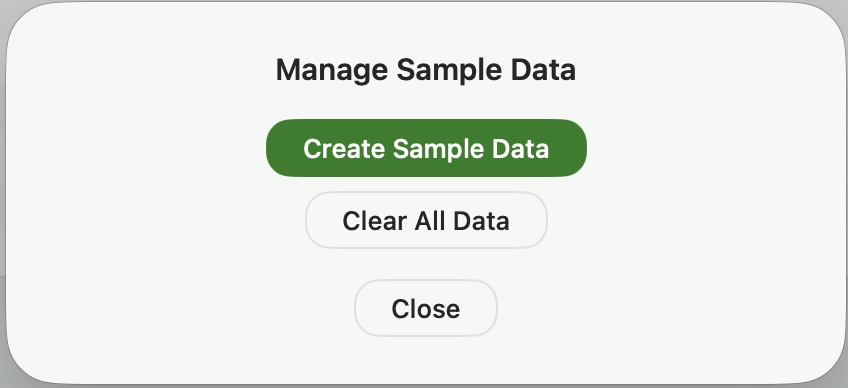

This documentation provides a complete guide to using Vehicle Service Tracker. It covers creating and managing vehicles, recording service history, attaching receipts and documents, and using search and reporting tools to organize and review your data.
Refer to the following annotated screen shot for an overview of major features

Annotated Main Application Screen
Documentation Index
- Getting Started
- Adding and Managing Vehicles
- Adding and Managing Service Records
- Working With Attachments
- Searching, Filtering, and Sorting
- Viewing Reports
- Exporting and Importing Data
- Create Sample Data / Clearing Your Data
- Changing Application Color Scheme
- Working With Dates
- Application Menus
- FAQ and Troubleshooting
Getting Started
Welcome to Vehicle Service Tracker! This Getting Started section provides an overview of the core features, including creating vehicle records, adding service history, attaching receipts or images, and reviewing your maintenance data over time.
Detailed instructions for each feature are covered in the sections that follow.
Add Your First Vehicle
Start by adding a vehicle record. Enter basic details such as year, make, model, current odometer, VIN, and license plate.
Add Service Records
Once a vehicle exists, you can add service records for maintenance, repairs, inspections, parts replacement, or any other work you want to track. Records can include the service date, mileage, total cost, summary, detailed notes, and who performed the work.
Attach Receipts, Images, or PDFs
Service records can include attachments such as receipts, invoices, photos, or PDF documents. This helps keep supporting documents connected to the exact service event they belong to.
You can open the attachment viewer from a service record to review saved files later.
Search and Review Your History
Use the search and sorting tools to find records by vehicle, date range, mileage range, cost range, keyword, or service description. Sorting makes it easy to quickly identify recent work, highest-cost repairs, or services performed at specific mileage intervals.
View Reports
Vehicle Service Tracker includes printable report views that display vehicle and service information in a clean, organized format. Reports always use the current search results and sort order from the main window.
Export Or Inport Your Data
Use the import and export tools to create a copy of your vehicle records, service records, and attachments.
Create Sample Data / Clearing Your Data
Want to explore the app before entering your own vehicle history? You can load sample vehicles and service records to experiment with features, search tools, reports, attachments, and import/export workflows using realistic data.
You can also clear all vehicles, service records, and attachments later if you want to remove sample data or completely reset the app.
Adding and Managing Vehicles
Vehicle records are the foundation of the app. Each service record belongs to a vehicle, so start by creating the vehicles you want to track.
Vehicle details include:
- Year, make, and model
- Current odometer reading
- VIN and license plate
To add a new vehicle, use the + (Add) button below the vehicle table. The new vehicle will appear in the table, where you can enter or update its details.
Note: when adding a new vehicle, search results are turned off automatically and the toggle switches to Showing All Records. This prevents newly created records from being immediately hidden if they don’t match the current filters.
To update an existing vehicle, select it in the vehicle table and edit the fields directly in the table. Changes are saved automatically.
To delete a vehicle, use the – (Delete) control.
Important: Deleting a vehicle will also remove its associated service records, so review records carefully before removing a vehicle.
Adding and Managing Service Records
Service records track the actual work performed on each vehicle. Use them for routine maintenance, repairs, inspections, parts replacement, diagnostic visits, or any other vehicle-related event.
A service record may include:
- Service date
- Mileage at the time of service
- Total cost
- Short summary
- Detailed description or notes
- Service provider or person who performed the work
- Attachments such as receipts, invoices, images, or PDFs
Examples of service records include oil changes, tire rotations, brake work, batteries, belts, filters, suspension repairs, inspections, and major repairs.
Keeping mileage and dates accurate makes the history more useful when planning future service, reviewing ownership costs, or when you sell or trade the vehicle.
To add a new service record, use the + (Add) button in the service records section. The new record will appear in the table, where you can enter or update its details.
Note: when adding a new service record, search results are turned off automatically and the toggle switches to Showing All Records. This prevents newly created records from being immediately hidden if they don’t match the current filters.
To update an existing service record, select it in the service record table, and edit the fields directly in the table, or in detail form. Changes are saved automatically.
To delete a service record, use the – (Delete) control.
Working With Attachments
Attachments are managed through the attachment viewer and manager window. You can open this window by clicking the attachment icon in the rightmost column of the service record table, or by using the Attachments button in the service record detail area.
Use the attachment viewer to add, view, or remove receipts, invoices, photos, scanned documents, or PDF files related to the selected service record.
When attachments are present, the table icon also displays the number of files currently attached to that service record.

Attachments Viewer / Manager Window
Searching, Filtering, and Sorting
Vehicle Service Tracker includes flexible searching and sorting tools to help you find the records you need.
The app provides two search modes: Vehicle Search and Service Record Search. Each mode is designed for a different type of data and includes its own set of filters.
Vehicle Search lets you filter the vehicle table using a text “contains” field (for make, model, VIN, or license plate) along with minimum and maximum mileage values. This is useful when narrowing the display to specific vehicles before reviewing service history, reports, or maintenance records.

Vehicle Search Panel
Service Record Search lets you filter service records using a text “contains” field (for summary, full description, or performed by), along with service date ranges, mileage at time of service, and cost ranges. This makes it easy to locate specific repairs, maintenance work, or expenses across large amounts of service history.
When working with search date ranges, Vehicle Service Tracker supports several shortcut date entry formats to make filtering faster. For example, entering 2/2026 in a start or end date field automatically searches using that month and year.
Additional date entry shortcuts and examples are covered later in the Working With Dates section of this documentation.

Service Item Search Panel
Search Results Toggle lets you temporarily switch between Showing Search Results and Showing All Records without clearing your search criteria. This makes it easy to compare filtered results against your full data set without re-entering your search values.
Note: when adding a new vehicle or service record, search results are turned off automatically and the toggle switches to Showing All Records. This prevents newly created records from being immediately hidden if they don’t match the current filters.
Using Search Results becomes especially useful when working with large amounts of service history. For example, you can sort by cost to quickly identify your most expensive repairs, sort by date to review recent work, or filter and sort records to focus on a specific time period.
Sorting lets you reorder table results by fields such as date, mileage, cost, or summary. Click a column header in the table to sort by that field, or to switch between ascending and descending order.
The current search results and sort order are also used by the Reports function. Reports let you review things like total miles driven during a certain period, maintenance costs over time, or subsets of records matching your current search criteria.
Viewing Reports
Reports provide a clean, reviewable summary of your vehicle and service data.
Reports can be used to review service history, summarize ownership costs, prepare information for sale, or print a readable maintenance history for your own records.
Reports update automatically based on what you’re currently viewing. As you apply filters or adjust your search criteria in the main window, the report reflects that same subset of service records in real time.
This means you can narrow your results by vehicle, date range, mileage, cost, or other criteria, and immediately see a matching report without needing to run anything separately.
Reports display your data in a hierarchical format, with vehicles shown at the top level and their associated service records listed beneath them. Each vehicle section also includes a summary of total service costs and total recorded mileage. Vehicle sections can be expanded or collapsed, allowing you to focus on the level of detail you need.
Reports are designed to be easy to read on screen and work well for printing. Or, if you want a copy of the report, but don't want to print a hard copy, you can use the Print function, but choose to Save to PDF.

Reports Screen
Exporting and Importing Data
Use the Import/Export tools to create an exported copy of your Vehicle Service Tracker data or import previously exported data later.
Exports always include:
- All vehicles
- All service records
You can also choose whether to include attached files such as receipts, photos, or PDF documents.
When you export data, the app creates a folder containing:
- A JSON data file with your vehicle and service record information
- An Attachments subfolder, when attached files are included
To import previously exported data, select the export folder during import — not the JSON file inside it. The app automatically locates the data file and imports the associated vehicles, service records, and attachments.
Warning: Importing data permanently replaces all existing vehicles, service records, and attachments currently stored in the app. This action cannot be undone.
A confirmation dialog is displayed before the import begins.

Import / Export Window
Create Sample Data / Clearing Your Data
Use the Manage Data tools to either create sample data for exploring the app, or completely clear the current database contents.
Creating sample data adds a realistic set of vehicles, service records, and attachments so you can experiment with features such as searching, reporting, attachments, and import/export workflows before entering your own maintenance history.
Warning: Creating sample data replaces all existing vehicles, service records, and attachments currently stored in the app.
You can also use the same tools to completely remove all current vehicles, service records, and attachments from the database when resetting the app or starting over.
Warning: Clearing the database permanently removes all data and cannot be undone.

Mangage Data Window
Changing Application Color Scheme
Use this option to choose from one of several included color schemes.
Application must be restarted for the color theme change to take effect.

Application Color Scheme Selection Window
Note: When macOS High Contrast accessibility mode is enabled, Vehicle Service Tracker automatically switches to the standard macOS system high contrast appearance for improved accessibility support.
Working With Dates
Vehicle Service Tracker supports several convenient date entry formats for both service records and search fields.
Service Record Dates support several exact-date formats when entering dates in either the table or detail view, including:
5/8/265/8/20265-8-262026-05-0820260508
Search Date Ranges support all of the same exact-date formats, along with additional month/year shortcut formats such as:
3/20263-2026Mar 2026March 2026
When using month/year shortcuts in search fields, the app automatically expands the entered value into an appropriate date range. For example:
- Start date +
3/2026→03/01/2026 - End date +
3/2026→03/31/2026
This makes it easy to quickly search an entire month without manually entering exact beginning and ending dates.
Application Menus
Most features can be accessed from the main window, but several app-wide actions are also available from the macOS menu bar.
| Action | Menu Location |
|---|---|
| Import/Export Data | File → Import/Export Data… |
| Show Report | Window → Show Report |
| Add New In Context | Edit → Add New In Context |
| New Vehicle | Edit → New Vehicle |
| New Service Record | Edit → New Service Record |
| Delete Selected Item | Edit → Delete Vehicle or Edit → Delete Service Record |
| Manage Data | Vehicle Service Tracker → Manage Data… |
| Select Theme | Vehicle Service Tracker → Select Theme… |
| Online Documentation | Help → Vehicle Service Tracker Help |
FAQ and Troubleshooting
How do I back up my Vehicle Service Tracker data?
Vehicle Service Tracker stores its live application data in the standard macOS application data location inside your user Library folder. If you use Time Machine or another full-system backup solution, this data is normally backed up automatically.
For additional protection or portability, you can also use the Import/Export Data tools to create exported copies of your vehicles, service records, and attachments.
Depending on your macOS configuration and sandboxing behavior, application data is typically stored in a location similar to:
~/Library/Containers/rke.VehicleServiceTracker/Data/Library/Application Support/
This folder and its contents should not be modified manually unless you are comfortable working directly with application support files and database storage.
How is my data saved?
Vehicle Service Tracker saves changes automatically as you work. Adding or editing vehicles, service records, attachments, and other application data does not require a separate Save button or manual save step.